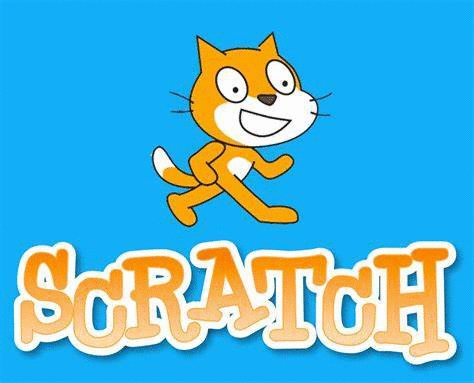

Reflection
Throughout my time learning computer science, I've learnt many new ideas that if you asked me about 3 years ago I would've been very confused. The beginning of my programming career started with the wonderful Scratch. Scratch is a perfect starting platform due to its simple yet capable abilities. I think that learning scratch is really what hooked me into programming just because of how I could express my creativity. After that, we learnt the beauty that is... Java. Java is by far my favourite programming language there is. For me, it's like solving a puzzle but the result is so much more satisfying. I know there is still so much to learn about Java and I hope to continue learning new concepts in Java for as long as I can. Once we learnt enough about Java (even though I believe there is never enough), we moved to HTML. The reason I love HTML so much is because it's like a more advanced scratch. You can express so much creative freedom as well as the simplicity of just writing what you want. I believe that I will probably also pursue HTML due to how much I've enjoyed it. The next language we learned was python. If I'm being honest, I didn't like python too much. For me, it was more the not fully understanding the different syntax's as well as the lack of brackets to organize the code. I believe that python could be very helpful, but I do prefer java over it. I believe that computer science is a valuable topic that everyone should be able to understanding especially due to the growing technology that is being developed. I hope to be able to go to university for computer science and follow a path that leads me to a career as a programmer (or a network software administrator... that also looks fun). I plan to take some time over the next few months to try to expand my knowledge a little more before I go to university. I will really miss the time spent learning here, but am glad that I will be able to learn even more.